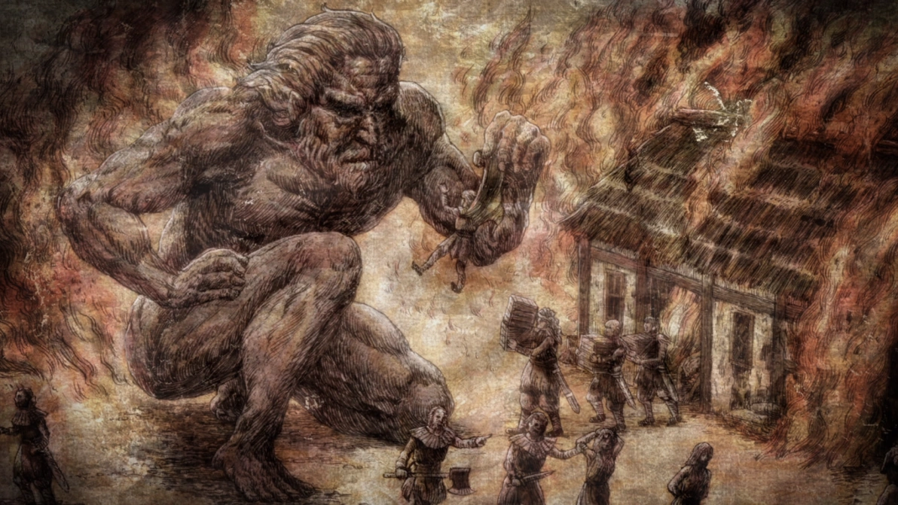

Subjects of Ymir

About the Subjects of Ymir
The Subjects of Ymir are a group of people descended from Ymir Fritz, the first person to possess the power of the Titans. Because of their ancestry, they are the only people capable of transforming into Titans and inheriting the power of the Nine Titans. Throughout history, the Subjects of Ymir have been treated differently by various societies. In Marley, they are considered an oppressed group and are forced to live in designated internment zones, where they face discrimination and strict restrictions. Many Eldians are also required to wear armbands to identify their ancestry. Some are sent to Paradis Island as Pure Titans, while others serve in the Marleyan military or participate in the Warrior program. Important characters who are Subjects of Ymir include Eren Yeager, Mikasa Ackerman, Armin Arlert, Reiner Braun, Zeke Yeager and Historia Reiss.